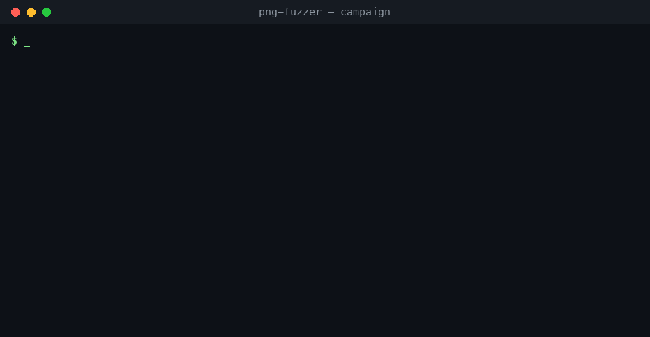
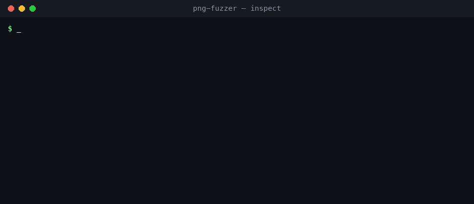
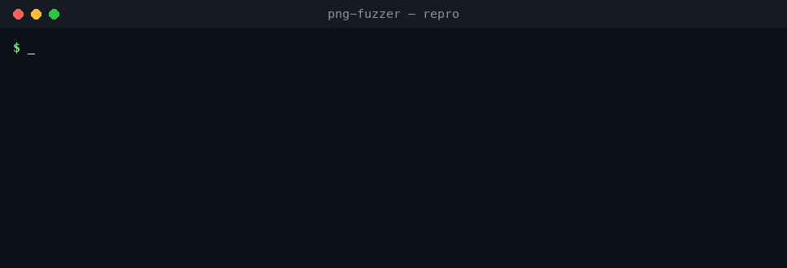
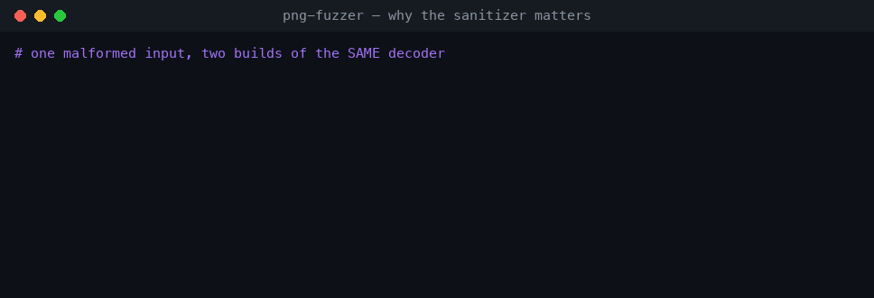

See it run
A deterministic --seed 0 campaign finds all four planted
bugs within the first ~20 iterations, then deduplicates thousands of raw crashes down to them.

How it works
Four responsibilities, wired into one loop.
The mutator corrupts the exact fields a decoder trusts; the sanitized target turns silent memory corruption into a located crash; the harness detects it, buckets it by crash site, and saves a reproducible input.
01Inspect structure — and triage crashes
The inspector prints a chunk table and never chokes on bad bytes, so the same tool works on a valid seed and on a saved crash file.

02Reproduce & read the report
repro replays a saved input and maps the sanitizer report to a CWE and a root cause.

#0 frame is the crash site the harness deduplicates on: naive_decoder.c:103.03Why the sanitizer matters
The same malformed input, two builds of the same decoder.

The four planted bugs
Each lives in its own function, so a report blames exactly one weakness.
| Function | Weakness | Root cause |
|---|---|---|
chunk_checksum | CWE-125 heap over-read | Trusts a chunk length from the file when reading. |
fill_row_scratch | CWE-121/787 stack overflow | File-controlled count writes into a fixed 64-byte stack buffer. |
ihdr_channel_lookup | CWE-125/129 OOB index read | Colour-type byte used directly as an array index. |
ihdr_alloc_and_fill | CWE-190→787 narrowing → heap write | 32-bit width narrowed to 16-bit when sizing the buffer. |
The common thread: a value taken from the file and trusted as a length, an index, or a size, with no bounds check — the most common shape of real memory-safety bugs.
Try it in three commands
# clone, build the sanitized target, make a seed git clone https://github.com/ashtherz/png-fuzzer.git && cd png-fuzzer cd target && make && cd .. && python3 corpus/make_seed.py # run a campaign, then read the results python3 src/fuzz.py fuzz --iters 4000 --seed 0 && cat crashes/SUMMARY.md